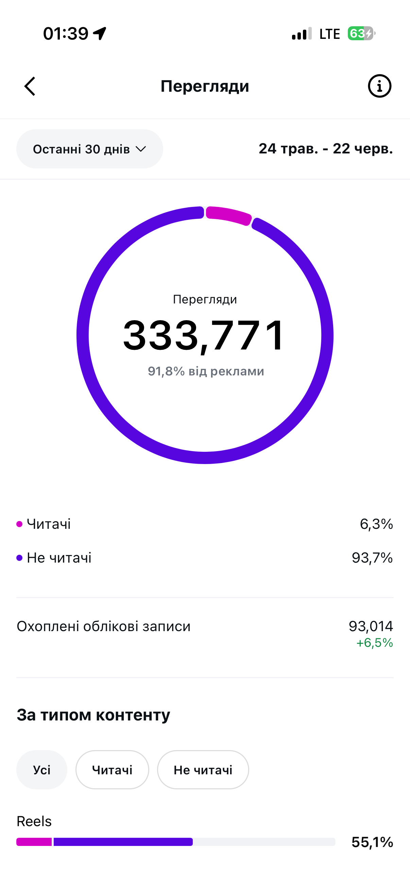
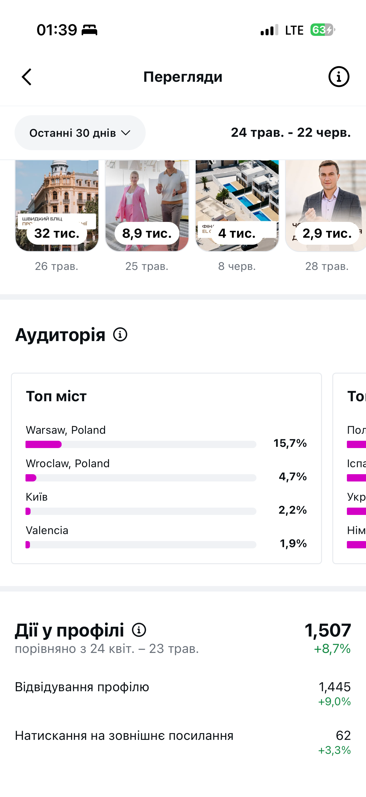
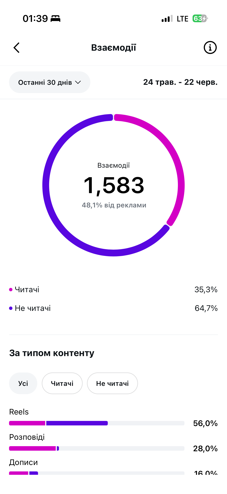
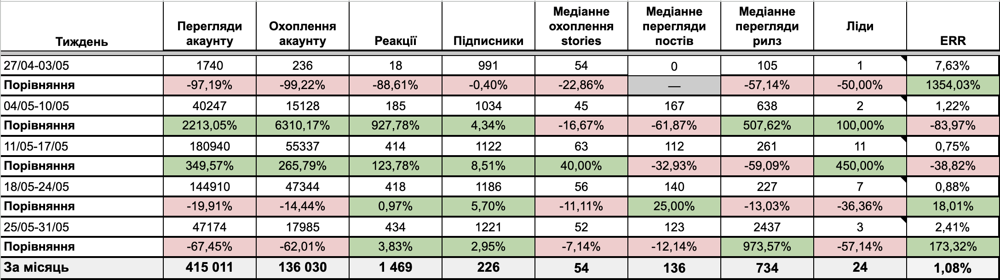
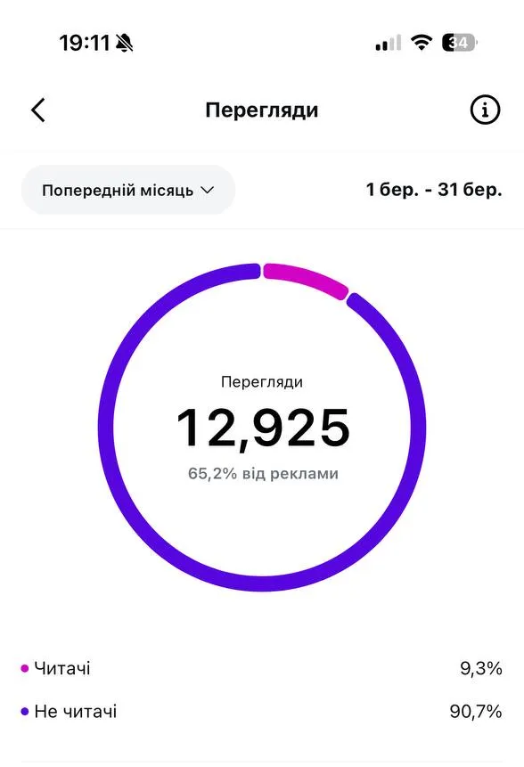
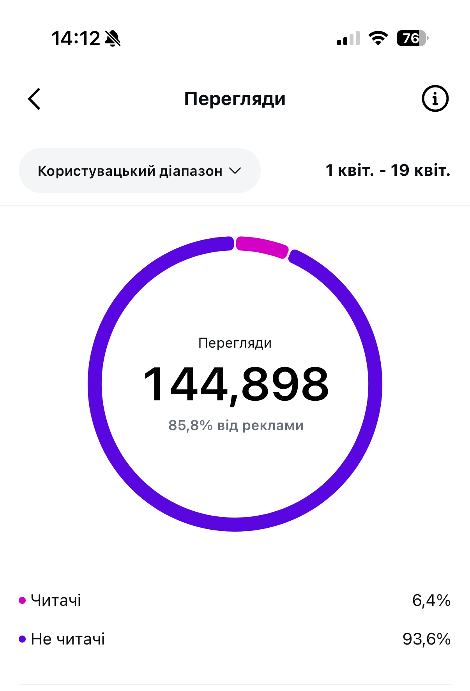
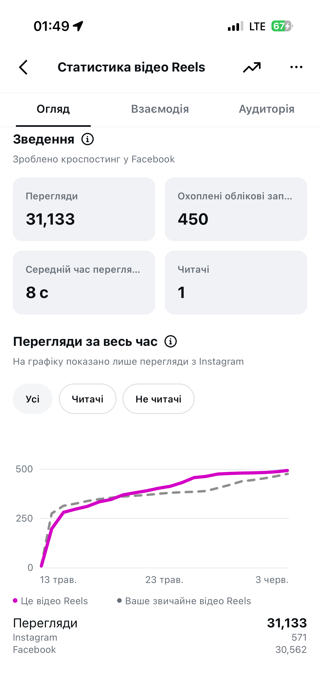
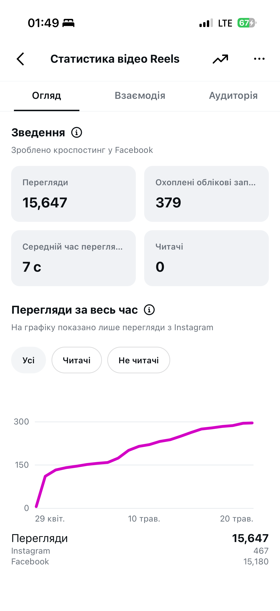

Український девелопер, що будує житло на узбережжі Іспанії. Ми запускали соцмережі з чистого аркуша і за пів року перетворили їх на впізнаваний медіапростір, який щомісяця приводить ліди на проєкти.



До нас звернувся український девелопер, який будує житло на узбережжі Іспанії: Бенідорм, Кульєра, Валенсія, Аліканте. Сторінку треба було запускати з нуля, адже компанія не мала соцмереж зовсім.
Запит був чітким:
Перед стартом ми проаналізували аудиторію та конкурентів на ринку нерухомості Іспанії і на основі цього розробили стратегію запуску. Перед нами стояла задача не стати черговим акаунтом із добіркою апартаментів, а демонструвати експертність щодо інвестицій в іспанську нерухомість: з реальним процесом будівництва і прозорістю забудовника.
Особливість проєкту — масштаб. Ми ведемо не одну сторінку, а цілу екосистему каналів: Instagram українською, іспанською та англійською мовами, а також декілька Telegram-каналів, пов'язаних з проєктами та партнерськими майданчиками. І під кожну ціль будуємо окрему воронку, щоб усі канали працювали разом.
Інвестиція в закордонну нерухомість — це непросте рішення і великий чек. Аудиторія приймає його не імпульсивно, тож контент має одночасно закохувати в Іспанію, доводити експертність забудовника і знімати страхи інвестора.
Ми зробили ставку на конкретику й закулісся: реальний прогрес будівництва, власне виробництво, цифри ринку, історії засновників у кадрі. Саме такий контент аудиторія сприймала найкраще — він стабільно давав переходи в профіль і нові ліди.
Найбільше довіри будує не реклама об'єктів, а реальний процес: будівництво, команда, конкретні цифри по ринку Іспанії.
Результати контенту на проєкті ми відслідковуємо завдяки щотижневій аналітиці, а також звітності щомісяця.

Під один із проєктів забудовника ми запустили повноцінну присутність у 3 соцмережах усього за 7 днів і вибудували мультиканальний прогрів до партнерського мітапу.
За 10 днів прогріву Instagram проєкту виріс із 12 925 до 144 898 переглядів, а сумарно контент про захід зібрав понад 448 000 переглядів по всіх майданчиках.


Повноцінний кейс про запуск проєкту з нуля та мітап ми розкриємо окремо. Тут це приклад того, як працює мультиканальний підхід на прикладі забудовника.
Дослідження аудиторії та конкурентів, позиціонування забудовника, контент-стратегія під цілі бізнесу — впізнаваність та ліди.
Звіти з будівництва, власне виробництво металоконструкцій, закулісся компанії, експертні теми про інвестування.
Рилз і випуски зі співзасновниками, адже відео з людьми дають найкращі охоплення та формують довіру.
Огляди міст Іспанії, де компанія будує, з логічним переходом до конкретних об'єктів — контентна воронка від інтересу до локації до інтересу до проєкту.
Instagram, Telegram і партнерські майданчики, зв'язані між собою. Кросспостинг підсилює охоплення — відео отримують додаткові перегляди з Facebook.
Розбір кожного формату, тестування гіпотез і масштабування того, що працює на досягнення бізнес-цілей.
Наразі ми масштабуємо отримання стабільного потоку лідів на проєкти забудовника, що є основною задачею SMM-напряму. Ми створили сторінку, вибудували довіру, зібрали аудиторію інвесторів і перетворили інтерес у конкретні запити. Робота над проєктом триває, і кожен місяць система працює все відчутніше.

